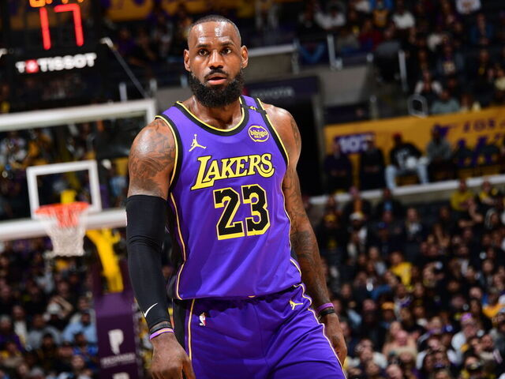
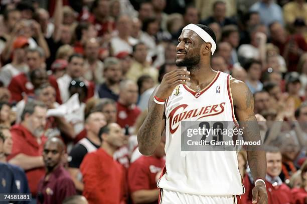
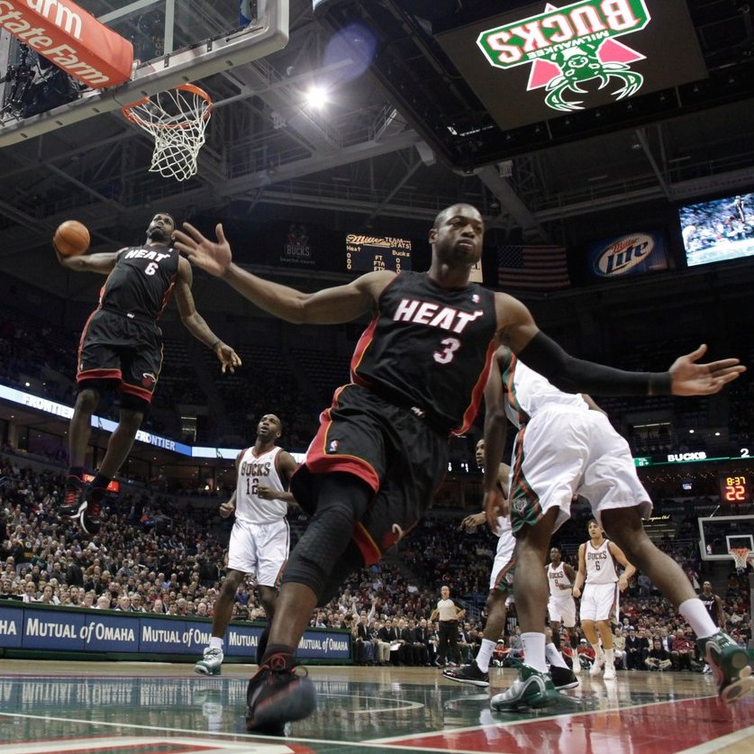
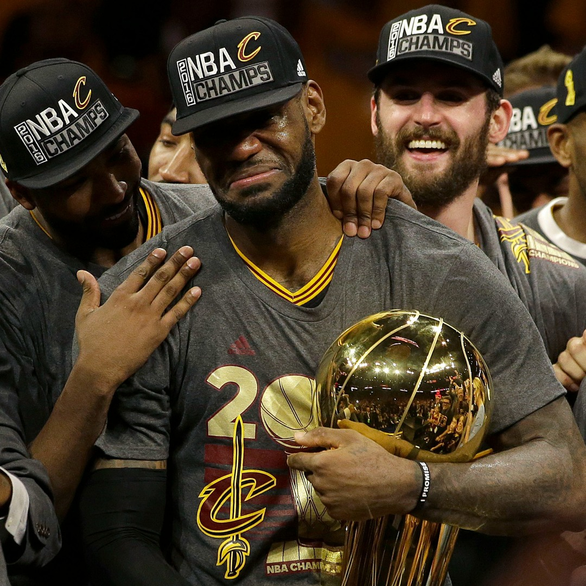
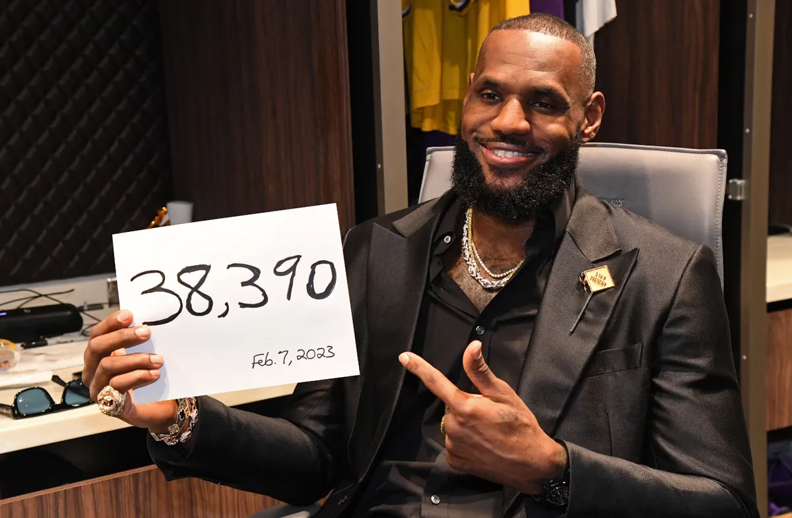

LeBron James
"The Chosen One"
I. Cleveland: La Profecía del Hijo de Akron (2003-2009)

Seleccionado como el número 1 del Draft de 2003 directamente desde la secundaria, LeBron James cargó con las esperanzas de una ciudad que no había ganado un título en décadas. Su impacto fue inmediato: promedió 20.9 puntos, 5.5 rebotes y 5.9 asistencias en su primer año, ganando el Rookie del Año y validando el apodo que Sports Illustrated le había dado: "The Chosen One".
El punto de inflexión ocurrió en los Playoffs de 2007 contra los Detroit Pistons. En el Juego 5, un LeBron de apenas 22 años anotó 25 puntos seguidos (29 de los últimos 30 de su equipo) para tumbar a la mejor defensa de la liga. Aunque llegó a sus primeras Finales ese año, la falta de apoyo en la plantilla le impidió ganar el anillo, a pesar de dominar la liga y ganar su primer MVP en 2009 con un récord de 66 victorias.
II. Miami Heat: Villanía y Gloria (2010-2014)

En el verano de 2010, LeBron anunció "The Decision", un movimiento que lo convirtió en el villano nacional. Al unirse a Dwyane Wade y Chris Bosh en Miami, el objetivo era claro: ganar campeonatos. Sin embargo, la derrota ante Dallas en 2011 fue el golpe más duro de su carrera, obligándolo a reconstruir su juego y su mentalidad para alcanzar la madurez absoluta.
La redención llegó en 2012, cuando finalmente alzó su primer trofeo Larry O'Brien tras vencer a OKC. En 2013, protagonizó unas finales épicas contra San Antonio Spurs; tras estar al borde de la eliminación en el Juego 6, LeBron dominó el Juego 7 con 37 puntos para lograr el bicampeonato. James alcanzó su cénit físico y táctico, ganando 2 MVPs de temporada y 2 MVPs de finales consecutivos.
III. El Regreso: Redención de una Tierra Prometida (2014-2018)

"En el noreste de Ohio, nada se da, todo se gana". Con esas palabras, LeBron volvió a Cleveland para romper la sequía de 52 años sin títulos. En 2016, tras ir perdiendo 3-1 en las Finales contra los Warriors del récord 73-9, LeBron lideró una remontada imposible.
Su legendario tapón a Iguodala ("The Block") y sus estadísticas (lideró a AMBOS equipos en puntos, rebotes, asistencias, robos y tapones) sellaron el campeonato más emotivo de la historia. Al sonar la bocina final, sus lágrimas y el grito de "Cleveland, this is for you!" cumplieron la promesa hecha a su hogar.
IV. El Capítulo de Hollywood: LA Lakers (2018-2026)

En 2018 firmó con los Lakers para devolver el brillo a la franquicia. En 2020, lideró al equipo al título en la Burbuja de Orlando, ganando su cuarto anillo. El 7 de febrero de 2023, grabó su nombre en la eternidad al superar el récord de puntos de Kareem Abdul-Jabbar, convirtiéndose en el Máximo Anotador de todos los tiempos.
En sus últimos años, desafió al tiempo manteniendo un nivel élite a los 40 años, logrando la hazaña histórica de compartir pista con su hijo, Bronny James, marcando un hito de longevidad y excelencia nunca antes visto en el baloncesto profesional.